V1 · 圓弧中島酒吧＋玄關矮櫃
進入本版 3D ↗黑石弧吧 × 煙燻胡桃木
黑色細脈紋石材成為吧台主角；弧形櫃皮以深胡桃木紋與細槽紋理包覆。透明展示玻璃與細黑骨架保留通透感。
調整前均一灰檯面與灰木外皮
這次改為黑色脈紋石面、可辨識木色的弧形外皮
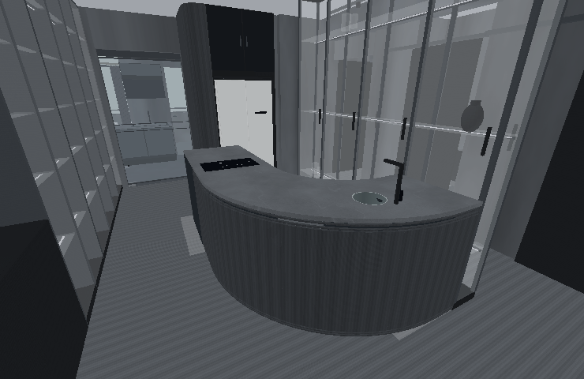
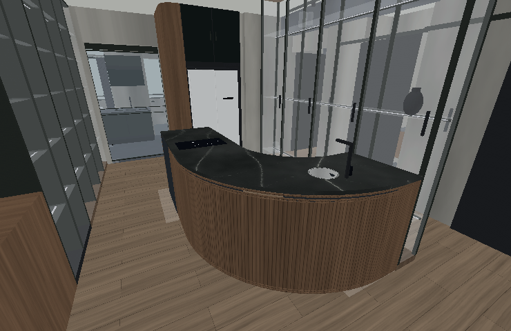
展開公共區同角度比較
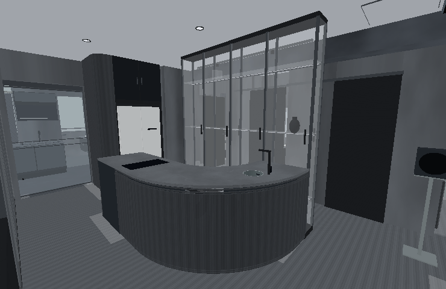
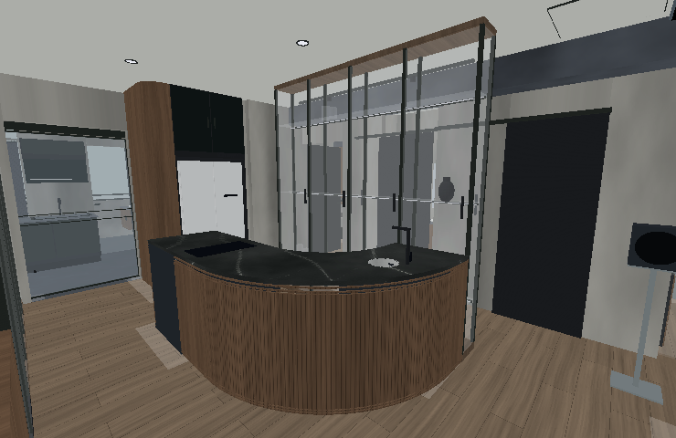
從 22 個案例重新整理現代工業風的材料關係。四版保留深色基調，以木紋、石脈、金屬光澤和織物拉開層次；日常看得清楚，夜晚可以調成酒吧氛圍。
牆面留中階礦物灰，櫃體沉下來；石材或銀色金屬集中在中島，形成公共區焦點。
手抹牆面、開放木孔、拉絲金屬、反射黑玻與編織地毯，各自使用不同紋理與反光。
水槽和廚房操作面用銀色金屬；收納、吧台社交面用深木；展示維持清玻璃。
深煙燻木
玄關、木櫃、地板銀色拉絲
V2 中島、水槽、廚櫃黑化鋼板
電視機構與細框脈紋石材
依版本分配深淺反射黑玻
V4 電視背景、櫃門銀灰織物
沙發、床品、地毯前後圖使用相同模型、視角與固定光線的離線渲染，已帶入程序紋理。圖中未模擬即時反射、凹凸與實際燈光；完整材質以各版即時 3D 呈現，GPU 外觀尚待實機驗收。上方小色票為材質搭配示意。
黑色細脈紋石材成為吧台主角；弧形櫃皮以深胡桃木紋與細槽紋理包覆。透明展示玻璃與細黑骨架保留通透感。
調整前均一灰檯面與灰木外皮
這次改為黑色脈紋石面、可辨識木色的弧形外皮




小中島外側改銀色拉絲不鏽鋼，搭灰脈紋檯面。旋轉電視使用黑化鋼板雲紋，影音上板以深木銜接全屋收納。
調整前中島與電視組都偏灰黑
這次改為銀色中島側面、灰脈紋石面、黑化鋼電視組
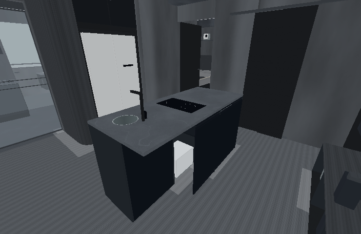
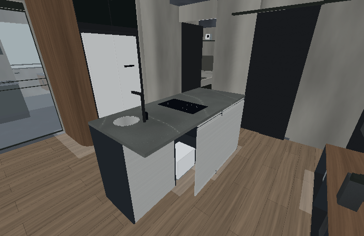
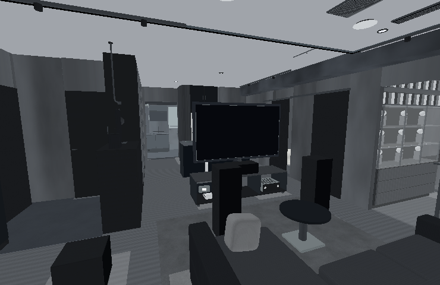
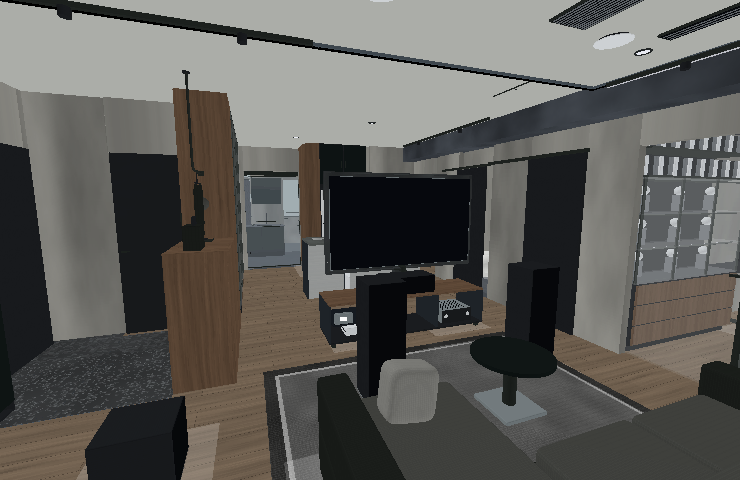
大中島用銀白底深脈紋石材，成為深色空間裡的明確焦點。社交側深木細槽，朝冰箱的設備門面為霧黑；旋轉電視為黑化鋼。
調整前石墨灰大中島，櫃身與檯面分界弱
這次改為銀白脈紋檯面、深木社交側、霧黑工作門片
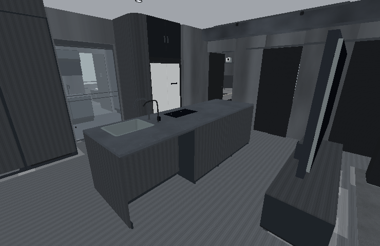
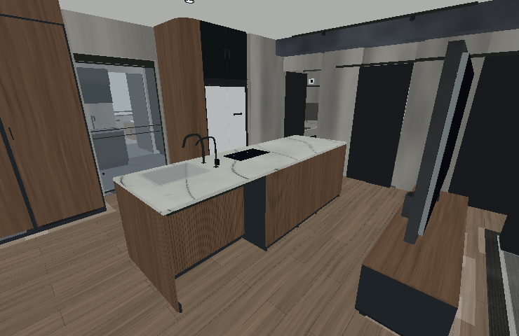
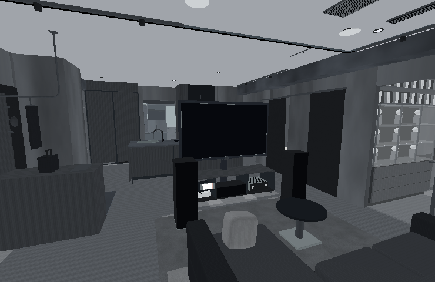
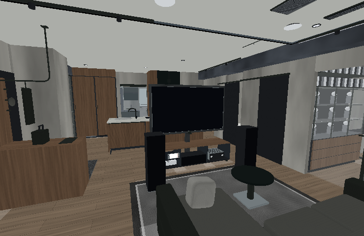
中島使用深色礦石層理，搭深木外側。南牆電視背景改反射黑玻，與深木影音上板、黑化鋼細框共同構成客廳重點。
調整前灰色檯面與灰色電視背景
這次改為深礦石檯面、反射黑玻電視背景、深木影音櫃
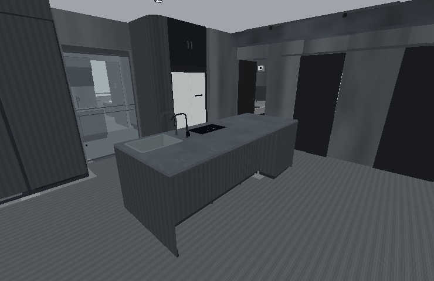
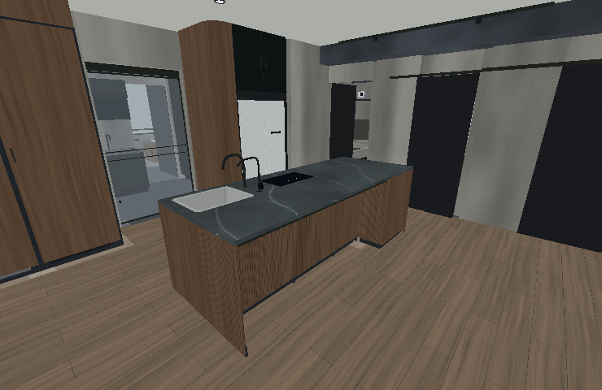
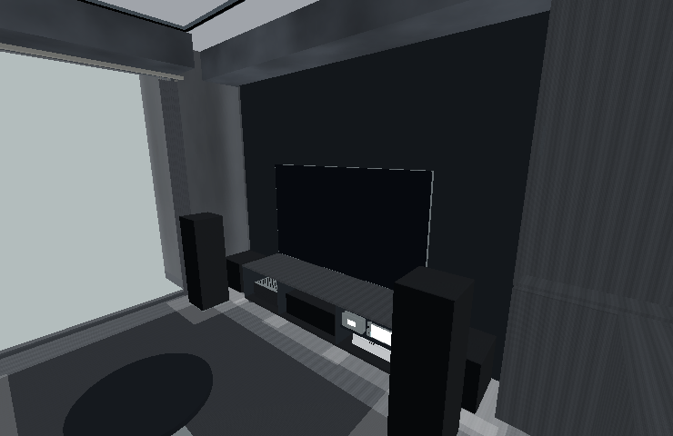
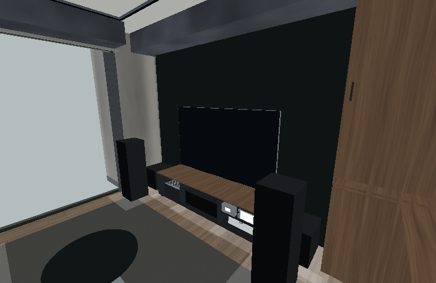
各版「設備控制」→「燈光與窗簾」→「室內白光與情境」。照明亮度、光色和展示重點光可分別調整；主臥情境仍獨立。
日常 · 4000 K清楚的中性光，分辨石紋、木色與收藏。
酒吧 · 2400 K一般照明預設 14%，展示重點光保留 32%。
依活動調整另有用餐、電影、遊戲與夜間；RGB 獨立控制。
這些是 3D 情境設定；不是燈具的現場照度或配光量測。畫面曝光與室內照明分開。
21 個住宅／Loft，加上 1 個旅館酒吧案例。每個名稱連至原專案與圖集；下列應用是本案的設計判斷，並非原設計師的建議。
查閱專案文章、設計師說明與可取得的圖說；保留原案例圖集連結。部分原圖工具無法載入，不宣稱逐張照片均完成視覺核對。以下『用在本案』是本案設計判斷，並非原作者的建議。
中島社交側用木，工作側用不鏽鋼；粗獷結構搭配細緻操作面。
用在本案V2 銀拉絲側面；V3、V4 深木外側與霧黑檢修面分材質。
木質入口過渡、黑鋼量體及分層燈光降低大空間的空洞感。
用在本案玄關櫃恢復深木，延續至鄰接收納；公共區使用有重點的亮暗。
舊屋材料、拼木地板、金屬與手作品並存，保留時間感。
用在本案木色保留自然深棕，與乾淨黑金屬形成新舊質感對比。
亮面不鏽鋼櫃門搭木工作面，深灰鋼梁與玻璃讓空間通透。
用在本案V2 小中島以銀色拉絲側面對比灰脈紋檯面及深木地板。
外露混凝土柱、黑化鋼玻璃框、胡桃木細節區分公共和私密空間。
用在本案主臥更安定的木與織物，公共區金屬、石材的對比更強。
粗混凝土、平滑塗料、黑化鋼與 Nordic Blue 石材，以少量主材做出豐富層次。
用在本案V3 銀白脈紋、V4 深礦石中島成為焦點，搭黑鋼與深木。